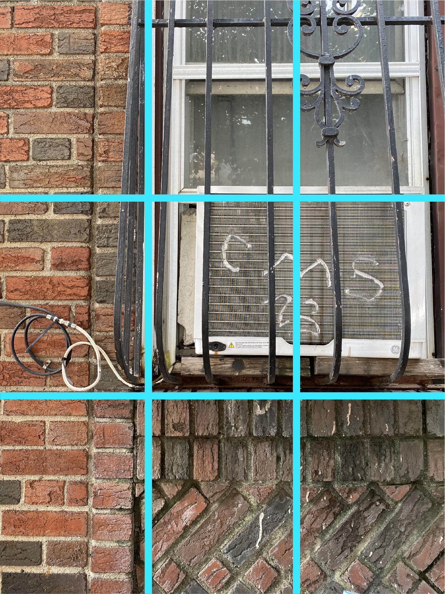

Principles Behind a Technically Sound Composition
Using the Rule of Thirds
The simplest principle that applies to design, photography, and more is the rule of thirds.
The photo below demonstrates the rule of thirds in action.


Typically the rule of thirds puts the subject of a photograph in one of the connecting corners
of its grid. This allows the viewer's eyes to naturally flow through the photo and experience
all of the dynamism that the composition has to offer. The subject of this photo is the air
conditioning unit. Encased by the two middle right pieces of the grid, the eye is naturally drawn
toward our subject.
-more information on using the rule of thirds-
Using lines
Lines are another important tool that photographers use to guide the viewers eyes. Lines can be drawn
by an object or they can be implied by multiple. In the example shown above, the bricks and window bars
serve as a path for the eyes, guiding them toward the air conditioning unit.
-more information on using lines-